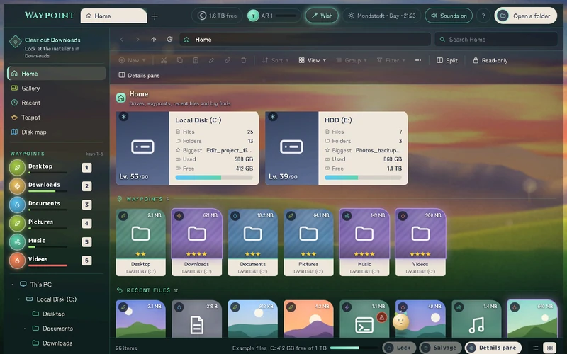
Waypoint
Windows file manager
A file manager where drives are levels, folders are waypoints and the Recycle Bin is called Salvage. Has a disk map and live backgrounds.
View on GitHubI'm a student in the Netherlands. I build Windows apps, small desktop widgets, study sites and an Android launcher, mostly in a night-and-gold look inspired by Genshin Impact. Every card links to its code on GitHub.
Windows programs, plus a phone remote for your PC

A file manager where drives are levels, folders are waypoints and the Recycle Bin is called Salvage. Has a disk map and live backgrounds.
View on GitHub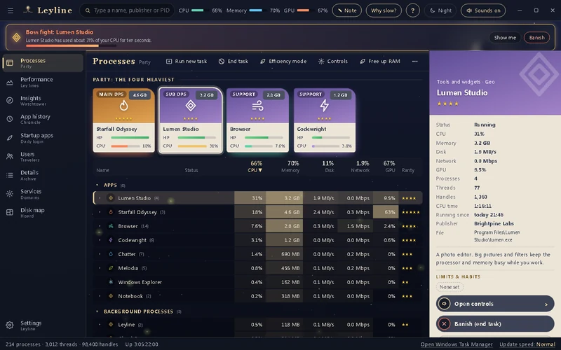
Your programs show up as a party, and the heavy ones get a "boss fight" banner. Also a game overlay and a disk map.
View on GitHub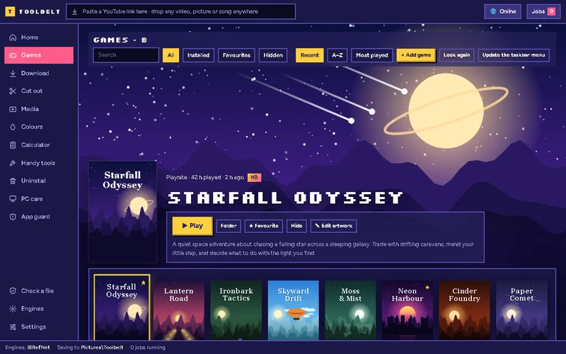
One app for the everyday jobs I would otherwise need a dozen websites for. Everything runs on your own PC.
View on GitHub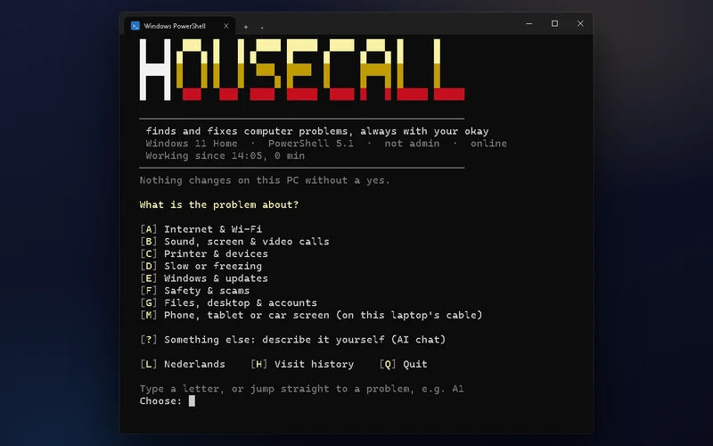
Mock-upFinds and fixes computer problems. It only looks until you say yes, and nothing is installed.
View on GitHub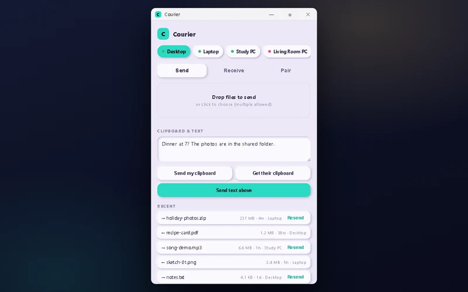
Send text, clipboard and files between your own devices over your own Wi-Fi: no cloud, no account.
View on GitHub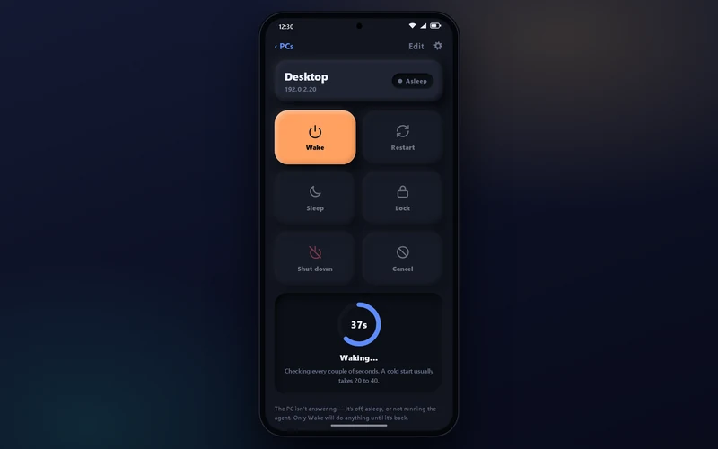
Mock-upStart, shut down, restart, sleep and lock your computer from your phone, over home Wi-Fi. (The repo is called PCRemote.)
View on GitHubSmall helpers that sit on top of Windows
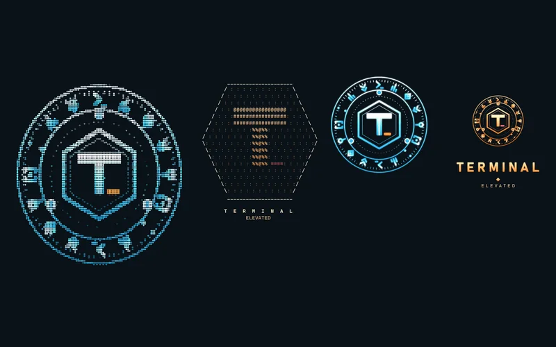
A custom look for Windows Terminal and PowerShell: a see-through rune theme, a welcome screen with an emblem, live PC status and short commands.
View on GitHub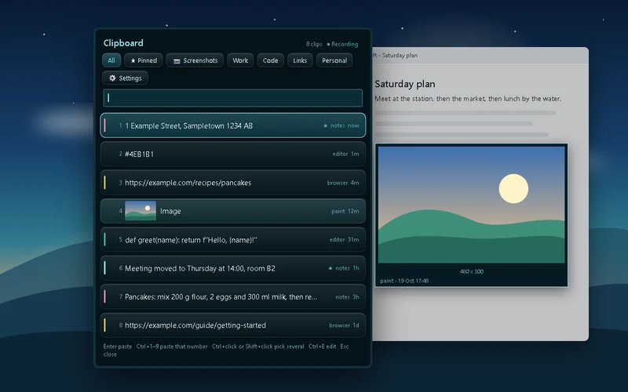
Mock-upCopy as usual, press a hotkey, and pick any earlier clip from a soft, themed list.
View on GitHub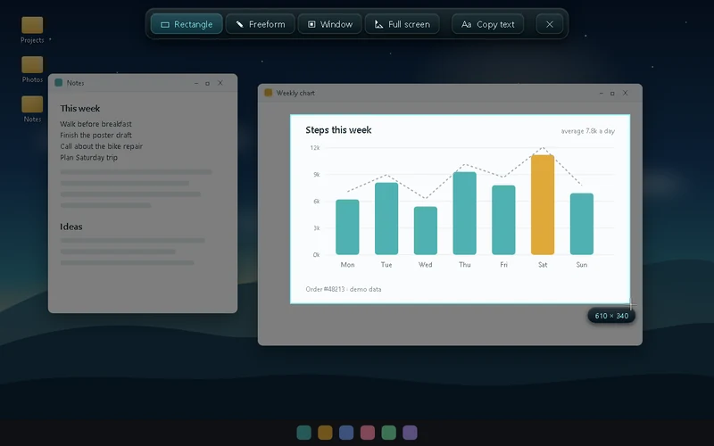
Mock-upDrag a box on the screen, mark it up, or copy the words straight out of the picture.
View on GitHub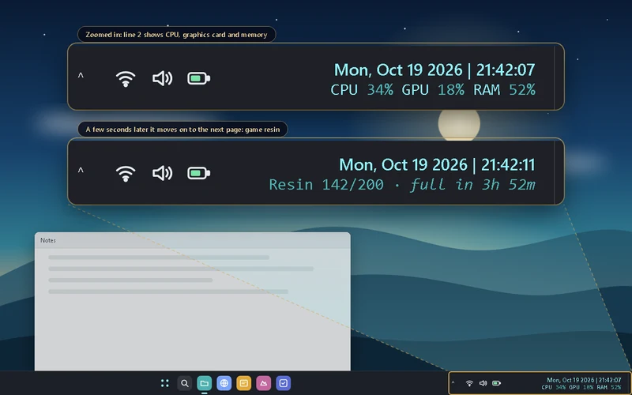
Mock-upA two-line clock: date and time on top, and below it CPU, GPU, RAM or what is playing.
View on GitHub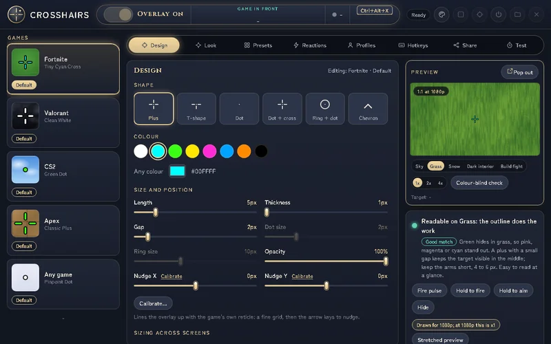
A see-through, click-through crosshair for your games, with a separate save for each game.
View on GitHubReveille and Courier have phone apps too
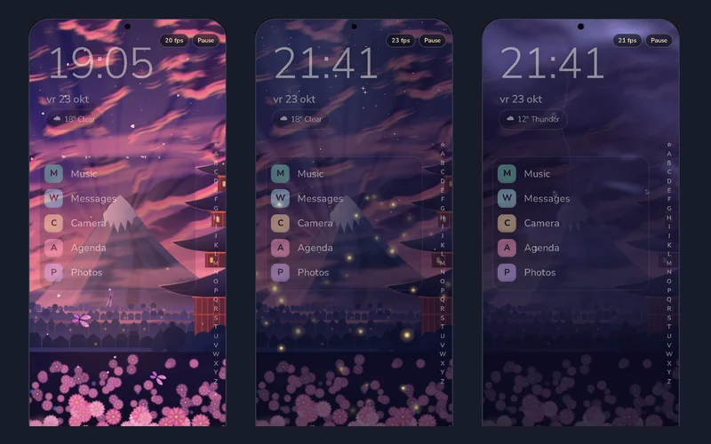
PrototypeA home-screen launcher with live wallpapers, an A-Z app list, a night screen and a PIN vault. Written in Kotlin.
View on GitHubBrowser pages, a study site and add-ons for VS Code
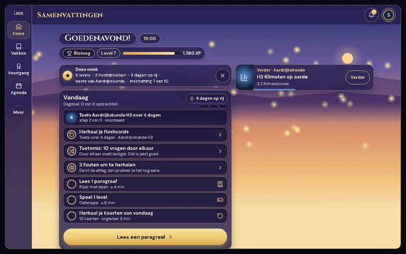
A study site for Dutch VMBO students: summaries, flashcards with spaced repetition and a practice game.
View on GitHub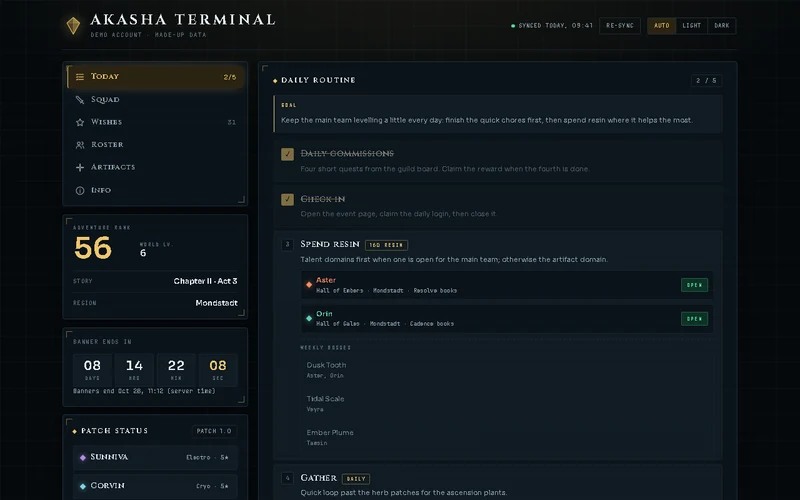
A night-and-gold dashboard for a Genshin account: daily routine, wish counter, roster and an artifact lab.
View on GitHub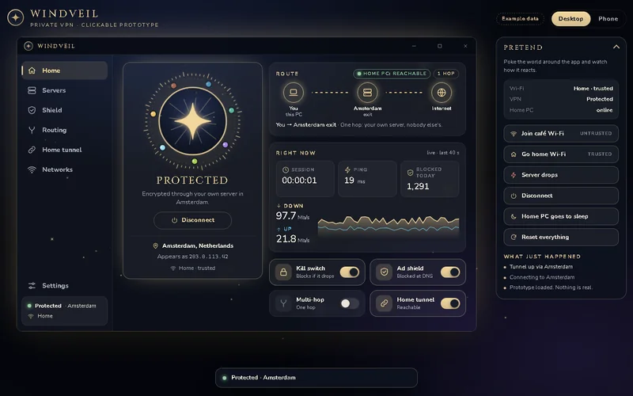
Windveil, a clickable design for a privacy VPN app, plus a page of ideas. A prototype only: it is not a working VPN.
View on GitHub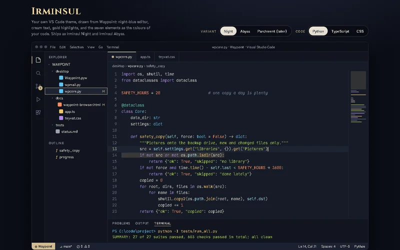
A night-blue, cream and gold theme with the seven elements as the colours of your code.
View on GitHubOne click in the status bar opens the Genshin interactive map or wiki, without leaving your editor.
View on GitHubAll pictures use made-up example data. Cards marked Mock-up show an HTML recreation of the app, not a live capture. Cards marked Prototype show a design mock-up with made-up apps, not the finished Android app. Genshin Quick View has no picture yet, so it shows a gold diamond.